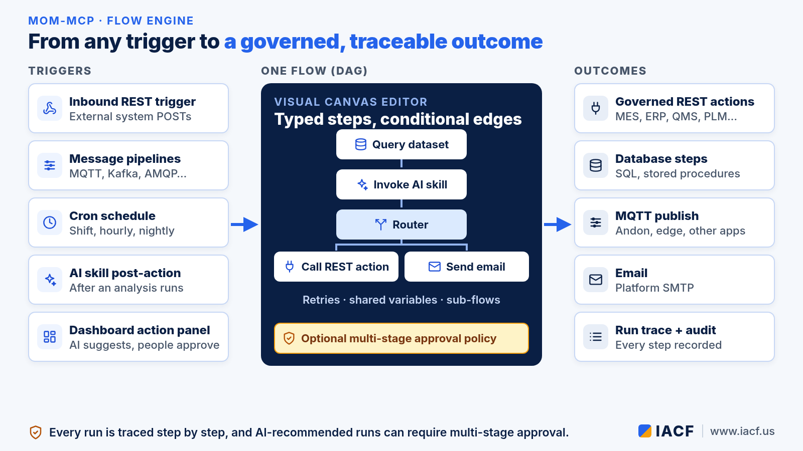
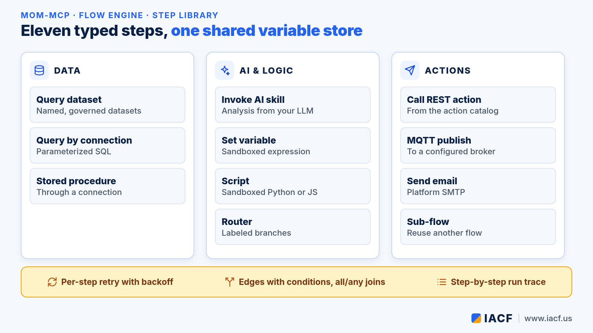
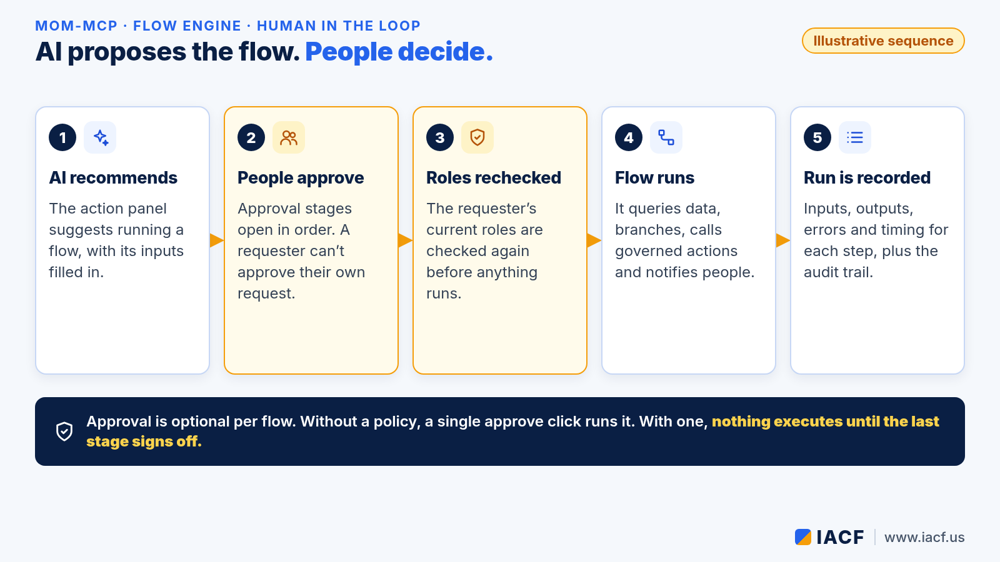

Inside the MoM-MCP Flow Engine: From Any Trigger to a Governed, Approved Action
MoM-MCP is IACF's bridge between AI and large language models (LLMs) and the manufacturing applications a plant already runs: MES/MoM, ERP, PLM, CRM, QMS and others. Reading data and answering questions is only half the job. Sooner or later someone asks, "Can it also do something?" Re-sequence an order, open a quality hold, alert the line, email the shift lead.
That is what the new flow engine in MoM-MCP is for. A flow is a small, visual program made of typed steps and conditional edges. It can start from a webhook, a message bus, a schedule, an AI analysis or a recommendation on a dashboard, and it ends in governed, traceable outcomes. When AI proposes the run, people can be required to approve it first.
New to MoM-MCP? Start with our introduction to MoM-MCP.

Why a flow engine?
Before flows, MoM-MCP already had several places where "something happens next": message pipeline actions, skill post-actions, scheduled jobs and the dashboard action panel. Each was a simple list of actions, wired by hand. That works for "when X, do Y." It gets awkward when the real process is "look up the order, ask the AI what is going on, then do one thing for a critical case and another for a routine one."
A flow gives all of those entry points one shared way to orchestrate work:
- Real branching. Edges carry conditions, and a dedicated router step sends the run down one labeled branch or another.
- Data passed between steps. Every step reads from and writes to a shared variable store, so the output of a query feeds the AI skill, and the AI's answer feeds the decision.
- Composition. A sub-flow step calls another flow, so common logic is written once and reused.
Five ways a flow can start
- Inbound REST trigger. An external system, such as a QMS, an ERP workflow or a test rig, POSTs to the flow's trigger endpoint using a narrowly scoped API token. The flow declares its inputs, and the payload is checked against them.
- Message pipelines. MQTT, Kafka, AMQP, ActiveMQ and Azure Service Bus pipelines can run a flow when a message arrives, with conditions and cooldowns so a noisy signal doesn't fire it over and over.
- Cron schedules. Run a flow at shift start, hourly or overnight.
- AI skill post-actions. After a skill finishes its analysis, it can hand the result to a flow.
- The dashboard action panel. The AI can recommend running a flow, with its inputs filled in, right next to the data that justifies it. A person approves it before anything runs.
The step library
Flows are built from eleven typed steps on a visual canvas editor:

- Data: query a named dataset, run a parameterized SQL query through a configured connection, or call a stored procedure. Query values are bound as parameters, never pasted into SQL text.
- AI and logic: invoke an AI skill, compute a value with a sandboxed expression, run a short sandboxed Python or JavaScript function for logic that needs more than one line, or branch with a router.
- Actions: call a REST action from the tenant's action catalog, publish to an MQTT broker (an andon board or an edge device, for example), send an email, or call a sub-flow.
Every step can have its own retry policy with backoff. When several branches meet, the join can wait for all of them or continue on the first to arrive with any. The engine validates the graph when you save it: it rejects cycles, unknown steps and two steps that would overwrite the same variable.
AI proposes, people decide
The most important part of a manufacturing flow is often who is allowed to start it. A flow can reference an approval policy, the same multi-stage approval workflow MoM-MCP uses for REST actions.

- Stages open in order, and the approvers within a stage work in parallel. A node can need any one approver from a role or all of them, and it can escalate on a timeout or by delegation.
- The person who requested the run can never approve it, even if they also hold the approver role. That is the classic four-eyes rule.
- When the last stage signs off, MoM-MCP checks the requester's current roles again before the flow runs, so a role that was revoked during the approval doesn't carry over.
Approval is optional per flow. Without a policy, a recommended flow runs after a single approve click, as action-panel recommendations always have. You can also read more about multi-stage sign-off in our quality response loop use case.
Every run leaves a trace
Each run is saved with a step-by-step record: what went into each step, what came out, any error, and when it started and ended. Steps skipped by a branch are recorded as skipped, not failed, and a failed run still keeps the steps that finished before the failure. Together with the AI-action audit trail, that answers the question every plant manager asks after an automated change: what happened, why, and who approved it?
Where it fits
The flow engine is new in MoM-MCP, and the same flows run on MoM-MCP Lite, which keeps the MCP server and REST API for flows, pipelines and scheduled jobs. If you are deciding where to design and where to run them, see Choosing a MoM-MCP edition.
Want to see a flow go from webhook to approved action on your own data? Contact us at info@iacf.us.